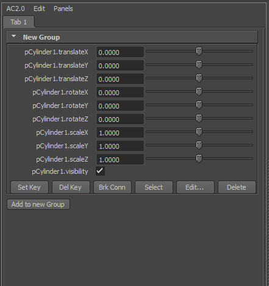

Attribute Collection is a Maya script that helps you create your own user interface (UI). It lets you select channels (attributes) in the Channel Box and creates fields and sliders for these channels in a new panel or window.
You can then interactively:
Important Note: This script is NOT an "official" product of Autodesk.
The hotline will NOT give you support if you have trouble with it.
If you are having problems with this script, please feel free to mail me directly (roland.reyer@autodesk.com).
Since this script is just a hobby, I cannot guarantee to answer within a certain time.
I hope you find it useful and I appreciate any comments, suggestions and bug reports.
First Steps
The Default UI
Edit a "Group"
Direct Editing
Buttons and Icons
The Preferences
The UI Tree and the Hierarchy Window
Anatomy of the UI
Node Name Substitution for Button/Icon Scripts
Problems loading files with UI?
Compatibility Notes
Notes for TDs/Developers
| What
you see now is the default UI of Attribute Collection. It is a
panel with two pulldown menus, a tabLayout with one tab ("Tab1") and
then a "Group" layout with an entry for each selected channel. A Group is a collapsable frame layout with a title and six default buttons at its bottom. The default buttons apply to the channels in this group. By default the channels are labeled with their object.attribute name. You can change the default label type in AC2.0->Preferences. Under the frame of the first Group there is a button "Add to new Group". Select some more channels in the Channelbox and click this button to create a new group. |
 |